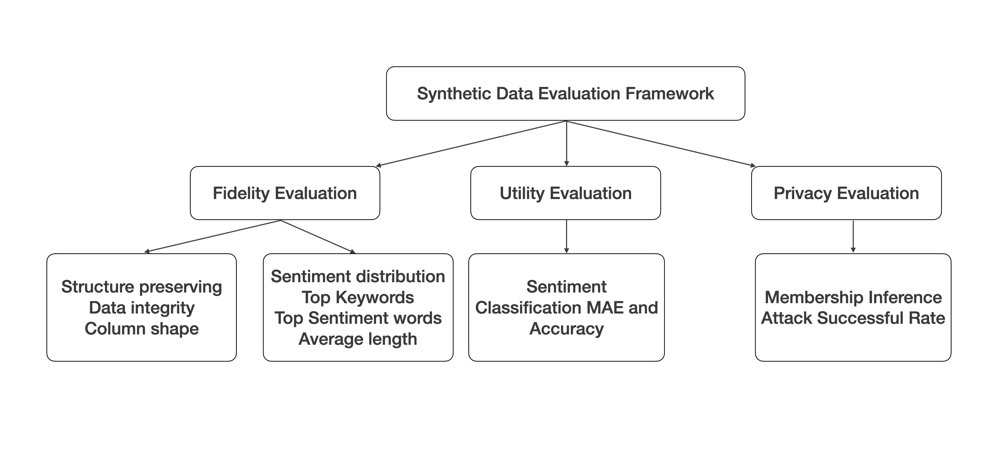
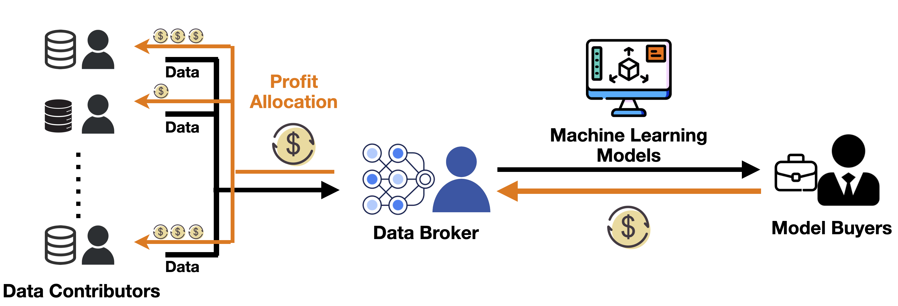
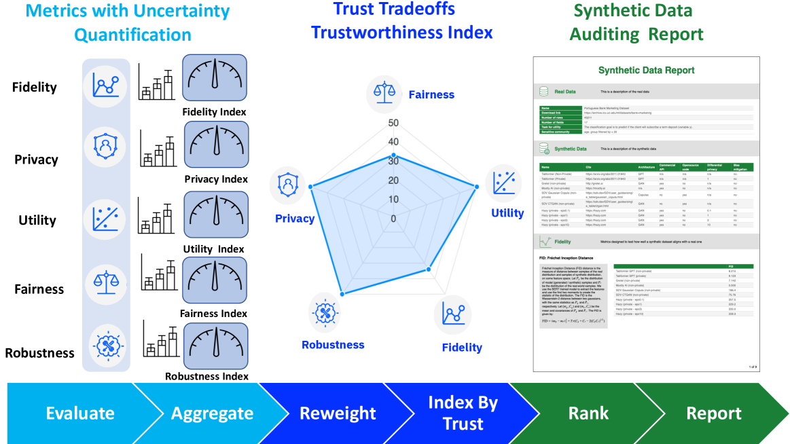

Executive Summary
67% of enterprises already use synthetic data, yet no objective standard exists for proving its quality. Without a way to distinguish who produced good data, rewards cannot be fair, and high-quality data producers inevitably leave the market. Generation technology evolves every year, but evaluation technology remains primitive.
Pebblous registered patent No. 10-2969403 offers a technical solution to this structural flaw. It automatically computes quality scores along three axes — Fidelity, Utility, and Privacy — then quantifies each data producer's contribution and distributes rewards accordingly. From evaluation to compensation, it is a fully automated pipeline that operates without human judgment.
This article examines the current state of synthetic data quality evaluation, the theoretical foundations and limitations of contribution scoring (Shapley value), and how this patent translates theory into a deployable system. We also explore the synergy with its pair patent (No. 10-2969395, smart contract-based trading) and the technology stack from DataClinic to Data Greenhouse.
67%
Enterprise Adoption
Currently using synthetic data
3-Axis
Quality Evaluation
Fidelity · Utility · Privacy
170x
Market Gap
Brokers $319B vs Markets $1.8B
$320M+
Gretel Acquisition
NVIDIA, March 2025
2026.08
EU AI Act
Quality proof legally mandated
The Synthetic Data Paradox — Abundant Yet Untrusted
The synthetic data market is growing at over 30% CAGR. From roughly $500 million in 2024, it is projected to surpass $2.6 billion by 2030. 67% of enterprises already use synthetic data, and some forecasts predict 80% adoption by 2025.
Behind this growth lies an uncomfortable truth. Gartner warned that "by 2027, 60% of data and analytics leaders will face critical failures in synthetic data management." Anyone can now generate synthetic data, but there is no reliable way to verify whether it is actually usable.
NVIDIA's acquisition of synthetic data startup Gretel for over $320 million in March 2025 signals the strategic value of this market. Yet it also reveals a problem. Gretel offers SQS (Synthetic Quality Score), but this is a single producer's self-assessment. It is not a mechanism for fairly determining "whose data is better" in a marketplace with multiple data producers.
Lancet Digital Health directly warned against "unwarranted confidence" in models trained on synthetic data in a 2025 paper. The core bottleneck of synthetic data is not generation technology — it is quality proof. Making it has become easy. Proving it remains hard.
Three Axes for Measuring Synthetic Data Quality
When evaluating synthetic data quality, the most widely adopted framework consists of three axes: Fidelity, Utility, and Privacy. These three axes are independently meaningful yet inherently in tension — maximizing one often weakens another, creating fundamental trade-offs.

2.1Fidelity — How Closely Does It Resemble the Original?
Fidelity measures how faithfully synthetic data reproduces the statistical properties of the original dataset. Common metrics include KS Test (Kolmogorov-Smirnov Test) for comparing single-column distributions, KL Divergence for quantifying distributional differences, and Wasserstein Distance for measuring minimum transport cost between distributions. It verifies whether correlation structures and multivariate distributions from the original are preserved in the synthetic data.
2.2Utility — Is It Actually Useful?
Even if synthetic data statistically resembles the original, it is meaningless if it fails in actual tasks. Utility measures how effective synthetic data is for downstream tasks such as ML model training and analysis. The most common approach is TSTR (Train on Synthetic, Test on Real): train a model on synthetic data, test on real data, and compare performance against a model trained solely on real data.
2.3Privacy — Does the Original Leak Through?
One of the core reasons synthetic data exists is privacy protection. But if synthetic data effectively replicates individual records from the original, the promise of privacy protection becomes hollow. Scenarios such as membership inference attacks and attribute inference attacks quantitatively assess the risk of original data exposure. Metrics like k-anonymity and l-diversity are commonly used.
The fundamental challenge across all three axes is the trade-off. Strengthening Differential Privacy degrades both fidelity and utility. The more noise you inject, the further you drift from the original, and the worse model training performance becomes. Simultaneously proving that "this data is sufficiently similar, sufficiently useful, and sufficiently safe" is the essential challenge of synthetic data quality evaluation.
Recent efforts to address all three axes in an integrated framework are gaining momentum. SynQP (2026) evaluates quality and privacy risk simultaneously within a single framework. Synthetic Data Blueprint (SDB) modularizes statistical, structural, and graph-based evaluation. NIST has defined three dimensions: verisimilitude, consistency, and traceability. The direction is consistent, but the transition to deployable automated systems remains in progress.
Who Made the Good Data — Game Theory of Contribution Scoring
Being able to measure quality does not solve the problem. In a synthetic data marketplace, multiple data producers participate. When data from multiple producers is used together for a single model's training, the next question is: how do you separate and fairly reward each producer's contribution?
3.1Shapley Value — A Solution from Cooperative Game Theory
The theoretical starting point for this problem is the Shapley value. Proposed by Lloyd Shapley in 1953, this concept calculates each participant's "average marginal contribution" in a cooperative game. It enumerates all possible participant coalitions and averages the performance change when a specific participant is added to each coalition.
Data Shapley applies this concept to ML model training, calculating the contribution of individual data points to model performance. Recently, DU-Shapley (NeurIPS 2024) proposed a proxy method for efficient dataset valuation, and Asymmetric Data Shapley (2025) introduced a method for separating asymmetric contributions between original and synthetic data.

The Shapley value formula. $\phi_i$ denotes participant $i$'s contribution, $v(S)$ is the value function for coalition $S$, and $N$ is the set of all participants.
3.2Limitations of Theory — Why Implementation Is Hard
While the Shapley value is theoretically fair, four fundamental limitations prevent practical system deployment.
- • Computational complexity. Enumerating all possible coalitions incurs exponential cost relative to the number of participants. With 20 participants, the number of combinations exceeds one million.
- • Non-IID problem. In federated learning environments, contributions may be undervalued when participant data is non-identically distributed (Non-IID).
- • No real-time evaluation. The structure is suited for batch-based post-hoc evaluation, making it difficult to compute contributions instantly during real-time trading.
- • No synthetic data specialization. Most research focuses on valuing original data contributions; frameworks for evaluating synthetic data producers' contributions remain largely unexplored.
The theory is sophisticated, but no deployable system exists. This is where patent No. 10-2969403 enters.
Patent No. 10-2969403 — An Automated Pipeline from Evaluation to Reward
Pebblous registered patent No. 10-2969403 is formally titled "Method for calculating contribution by evaluating synthetic data quality." It defines an end-to-end pipeline that automatically performs 3-axis quality evaluation of synthetic data, converts the results into contribution scores, and distributes rewards to data producers.
4.1Automated 3-Axis Quality Scoring
The first core innovation of this patent is automatically computing quality scores across all three axes — Fidelity, Utility, and Privacy — within a single system. Each axis's metrics are calculated independently, then combined through weighted aggregation to produce an integrated quality score. Crucially, the weights are not fixed but dynamically adjusted based on the transaction's purpose. For medical data transactions, the Privacy weight increases; for autonomous driving simulation data, the Fidelity weight takes priority.
4.2Contribution Scoring and Reward Distribution
The second core innovation is the mechanism for converting quality scores into contribution scores. In environments with multiple data producers, it quantifies the degree to which each producer contributed to the overall dataset's quality. The structural differentiator is designing a path that derives contribution directly from quality scores — without incurring the Shapley value's exponential computation cost.
Contribution scores are converted into token- or point-based rewards. Producers who create higher-quality data receive greater rewards, while those providing lower-quality data see reduced compensation. This structure aligns with the DSIC (Dominant Strategy Incentive Compatible) principle — an incentive design where submitting the highest-quality data is the dominant strategy for every participant.
4.3Significance of System-Level Claims
This patent is not merely a method patent protecting a software algorithm. It includes electronic device and system-level claims that protect both the hardware environment running the algorithm and the entire system architecture. This means that implementing a similar algorithm on a different system also falls within the patent's scope of protection.
Where existing approaches stop at "evaluation," this patent automates the entire loop of "evaluation → contribution → reward." Evaluation results become the basis for rewards, and the reward structure incentivizes the production of better data. It is a virtuous cycle by design.
Pair Patent Synergy — Smart Contract-Based Trust Infrastructure
Patent No. 10-2969403 (quality evaluation and contribution scoring) is meaningful on its own, but the complete picture emerges when combined with pair patent No. 10-2969395 (smart contract and virtual environment-based trading), registered on the same day. The two patents are twin pillars of a synthetic data trust infrastructure.
While patent 403 proves "how good is this data, and who contributed," patent 395 handles "automatically executing transactions based on that proof." Quality proof becomes the transaction condition itself.
| Comparison Axis | No. 10-2969403 (This Patent) | No. 10-2969395 (Pair) |
|---|---|---|
| Core Function | Quality evaluation + Contribution scoring | Smart contracts + Virtual environment trading |
| Input | Synthetic datasets | Quality certificates + Trade conditions |
| Output | Quality scores + Contribution rewards | Automated trade execution + Blockchain records |
| Technology Base | 3-axis quality metrics + Contribution algorithm | Virtual simulation + Smart contracts |
| Pipeline Position | Evaluation stage (pre-trade) | Execution stage (at trade) |
Existing blockchain data trading platforms like Ocean Protocol handle general-purpose data and do not address the quality challenges unique to synthetic data. A 170x gap exists between the global data broker market ($319B) and pure data marketplaces ($1.8B). The root cause is information asymmetry — buyers cannot verify data quality before purchase.

The combination of these two patents structurally eliminates this information asymmetry. Patent 403 proves quality; patent 395 automatically executes transactions based on that proof. When quality measurement and trading mechanisms are separated, you get a lemon market. When they are integrated, you get trust infrastructure. A detailed analysis of the pair patent is available in Synthetic Data Is Flooding In, So Where Is the Exchange?
Regulation Creates Markets — EU AI Act and ISO 5259
Proving synthetic data quality is shifting from "nice to have" to "must have." Two forces are driving this transition: the EU AI Act and the ISO/IEC 5259 series.
6.1EU AI Act — The August 2026 Deadline
The EU AI Act takes full effect on August 2, 2026. It imposes legal obligations on high-risk AI systems to prove the "relevance, representativeness, accuracy, and completeness" of training data. Article 10 specifies quality requirements for training, validation, and testing datasets. It recognizes synthetic data as a tool for bias detection and correction, but requires it to possess "appropriate statistical properties."
Article 50(2) mandates machine-readable markings (watermarks, metadata) for AI-generated synthetic content. Non-compliance incurs fines of up to 3% of revenue. As tracking synthetic data provenance and managing transaction histories become legal requirements, the need for blockchain-based audit trail technology is surging.
6.2ISO/IEC 5259 — The International Standard for Measurement
The ISO/IEC 5259 series (published 2024-2025) is an international standard for AI data quality. It consists of five parts, with Part 2 (data quality measurement model) and Part 4 (data quality process framework) adopted as European Standards (EN) in February 2025.
| Part | Published | Core Content |
|---|---|---|
| 5259-1 | 2024 | Overview and terminology |
| 5259-2 | 2024.11 | Data quality measurement model — measurable characteristics |
| 5259-3 | 2024/2025 | Requirements and guidelines |
| 5259-4 | 2024.07 | Data quality process framework (adopted as EN) |
| 5259-5 | 2025 | Data quality governance framework |

This patent's 3-axis quality evaluation algorithm can serve as the engine that executes the ISO/IEC 5259-2 measurement model. If the standard defines "what to measure," this patent implements "how to measure automatically and connect it to contribution scoring." Regulation is not a cost — it is a market entry barrier. Those with proof technology will seize the market first.
From DataClinic to Data Greenhouse
This patent is not an isolated invention within the Pebblous technology stack. It serves as a critical node in a pipeline that flows from DataClinic (diagnosis) → PebbloSim (generation) → quality certification (this patent) → trade execution (pair patent).
7.1Data Flywheel — A Wheel That Spins Faster with Each Turn
When DataClinic diagnoses a dataset, the results improve PebbloSim's generation quality. The generated synthetic data then passes through this patent's quality evaluation. Evaluation results feed back to improve diagnostic accuracy. With each iteration, diagnosis becomes more precise, generation more accurate, and evaluation more trustworthy. For a competitor to catch up, they would need to build the same flywheel from scratch.
7.2DataGreenhouse's Governance Layer
Pebblous calls this entire pipeline "Data Greenhouse." In a 5-layer architecture, this patent sits in the Governance Layer. Data from the Observation Layer (DataClinic diagnosis) flows through the Action Layer (PebbloSim generation), then receives quality evaluation and contribution scoring at the Governance Layer. Audit logs and evidence trails required by ISO/IEC 5259 and ISO 42001 are automatically generated at this layer.
DataClinic
Data Health Diagnosis
Diagnoses data quality using geometric manifold analysis. Analyzes 100,000 images in under an hour, visualizing per-class distribution and density as interactive data maps.
PebbloSim
Synthetic Data Generation
Generates synthetic data free from Physical Hallucination by replicating physical laws. Achieves 2% model performance improvement with just 5% synthetic data.
Quality Certification (This Patent)
Governance Layer
3-axis automated quality evaluation + contribution scoring + reward distribution. Automatically generates ISO 5259 audit trails with built-in regulatory compliance.
Editor's Note
DataClinic is currently available for free at dataclinic.ai. It diagnoses image dataset quality on geometric manifolds and lets you visually inspect per-class distribution, density, and outliers. Experience the first step of the synthetic data quality evaluation pipeline discussed in this article — "diagnosis" — firsthand.
A single patent's value is limited. But when "diagnosis → generation → quality certification → trade execution" connects into a single pipeline, each stage becomes the input for the next, creating vertical integration. This integration itself is the moat. In the synthetic data market, generation technology will commoditize, but vertical integration binding quality proof and trading infrastructure together will not be easily replicated.
Pebblous Data Communication Team
June 6, 2026